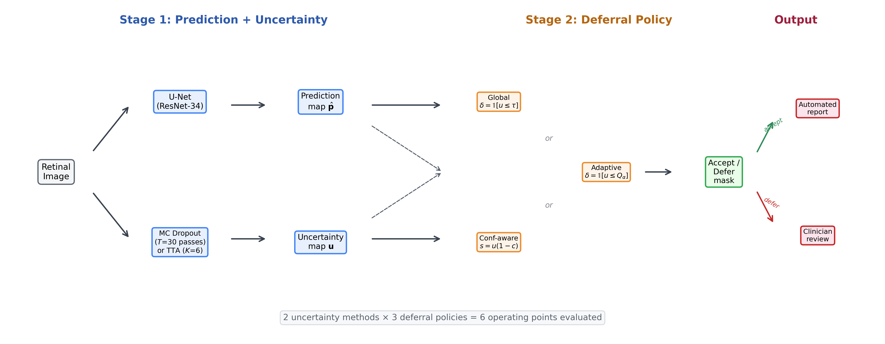
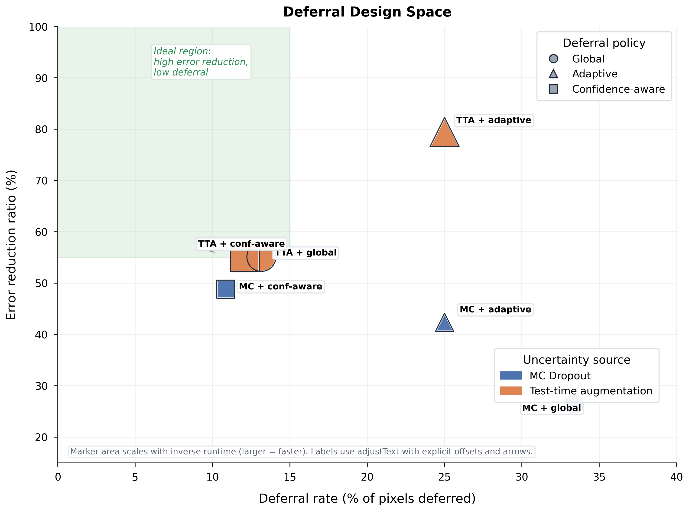
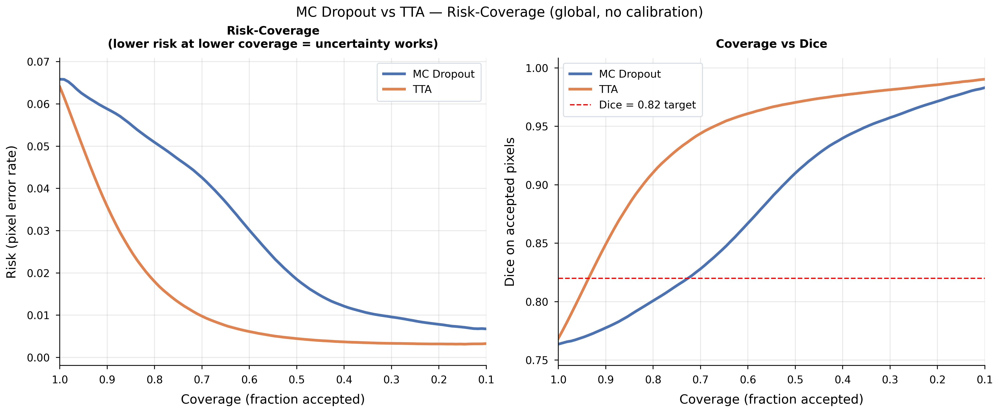
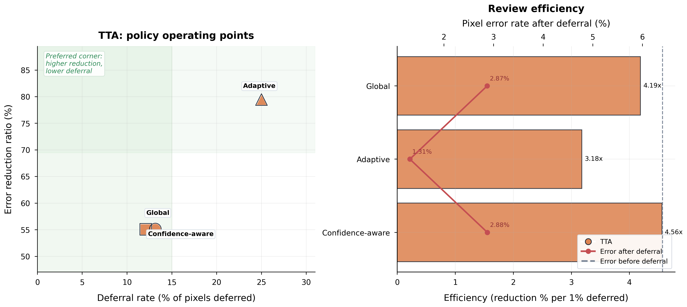
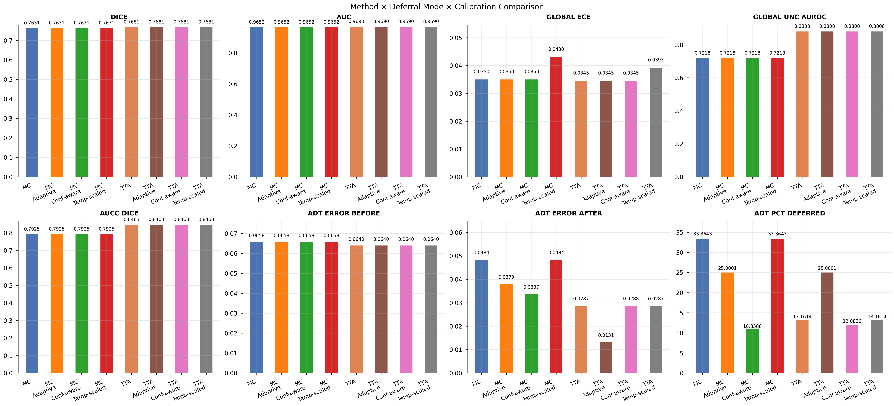
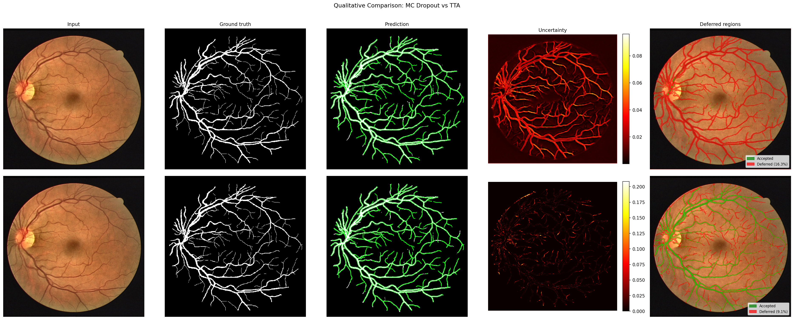

Best Decision Result
79.5%
Error reduction with TTA plus image-adaptive deferral on DRIVE.
Research Project Page
Reliable segmentation requires more than good masks. This project studies how uncertainty estimation and deferral policies work together to decide which predictions should be trusted and which should be reviewed.
Best Decision Result
Error reduction with TTA plus image-adaptive deferral on DRIVE.
Review Budget
Deferred pixels for the strongest high-budget operating point.
Uncertainty Quality
TTA uncertainty AUROC in the unified comparison bundle used for downstream decisions.
Low-Budget Option
Deferred pixels for the TTA confidence-aware operating point, which removes roughly 55% of the error.
Overview
This project studies retinal vessel segmentation through the lens of reliability. A segmentation model can produce a strong average Dice score and still fail exactly where human review matters most. Instead of treating uncertainty as an afterthought, the repository models the full decision chain: predict a mask, estimate uncertainty, and decide where the system should defer.
The codebase compares Monte Carlo Dropout and Test-Time Augmentation as uncertainty sources, then evaluates how three different deferral strategies use those uncertainty maps. The goal is not only to improve segmentation metrics, but to build a more reliable prediction-to-review workflow.
Main empirical takeaway
TTA consistently produces stronger uncertainty rankings than MC Dropout for this task. In the main comparison bundle, TTA reaches uncertainty AUROC 0.881 versus 0.722 for MC Dropout, and those stronger rankings translate into better selective prediction, lower accepted-region risk, and better deferral decisions.
Method
A U-Net-style segmentation model with a ResNet encoder predicts vessel probabilities on DRIVE and is evaluated under both in-domain and out-of-domain settings.
Uncertainty is estimated either by repeated stochastic dropout passes or by deterministic geometric test-time augmentations whose disagreement exposes fragile structures and boundaries.
The uncertainty map feeds a decision layer that accepts confident pixels and defers risky ones using global, adaptive, or confidence-aware policies.

Results
In the consolidated comparison artifacts, TTA reaches uncertainty AUROC 0.881 while MC Dropout reaches 0.722 in the same comparison family. TTA is also faster in this bundle: about 0.86 seconds per image versus about 2.65 seconds for MC Dropout.
TTA with adaptive deferral reduces mean error by about 79.5% while deferring 25.0% of pixels. This is the strongest high-budget operating point in the repository.
For smaller review budgets, confidence-aware deferral gives nearly the same error removal as TTA global deferral while deferring fewer pixels. TTA confidence-aware deferral removes about 55% of error while deferring only about 12% of pixels.

Risk-Coverage
Risk-coverage analysis asks what happens when the system accepts only the most certain pixels. A strong uncertainty estimator should make accepted-region error drop quickly as coverage decreases.
That is why the project reports both uncertainty AUROC and coverage-based metrics such as AUCC. Together, they show not only whether uncertainty correlates with failure, but how much practical value can be extracted from that ranking.
Operational interpretation
If two methods have similar segmentation quality but one reaches a better accepted-region Dice at the same coverage, that method is better for human review workflows.

Deferral Modes
The simplest policy: one threshold over uncertainty for every image. Easy to deploy, but less flexible under changing image difficulty.
A per-image percentile threshold that normalizes by image difficulty and gives the strongest high-budget result in the repository.
Combines uncertainty with boundary proximity so review budget focuses on uncertain and borderline pixels rather than uncertain-but-confident ones.

Figures


Takeaway
The central lesson of this repository is that uncertainty should not be judged only by calibration or aesthetics of uncertainty maps. It should be judged by how effectively it reduces error when paired with explicit decision policies.
On this project, TTA is the strongest practical default. It gives better uncertainty rankings than MC Dropout, stronger downstream deferral behavior, and a better runtime-quality tradeoff in the unified comparison bundle.
Recommended practical default
Use TTA when you want the best overall uncertainty source, adaptive deferral when you can review more pixels, and confidence-aware deferral when review budget is tight.